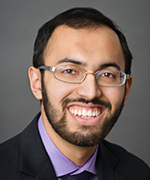
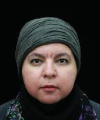
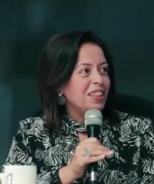
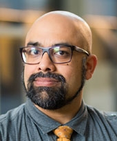
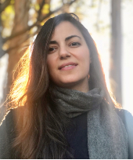
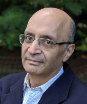

Muslims in ML
NeurIPS 2023 Workshop, New Orleans, USA.
Overview
Muslims In ML (MusIML) is an affinity workshop for the NeurIPS community.
We focus on both the potential for advancement and harm to Muslims and those in Muslim-majority countries who religiously identify, culturally associate, or are classified by proximity, as “Muslim”.
The workshop will run on Tuesday, December 8, 2020 from 10:30AM - 1:30PM EST.
We will feature a combination of pre-recorded and live talks, followed by a panel discussion with authors on the intersection of policy, technology, and Muslim communities.
Invited Speakers
|  | |
| Abubakar Abid Investigating Anti-Muslim Bias in GPT-3 through Words, Images and Stories |
Darren Byler The Digital Enclosure of Turkic Muslims in Northwest China |
|  |  |
| Mona Diab Data Paucity and Low Resource Scenarios: Challenges and Opportunities |
Samhaa El-Beltagy NLU Meets Islamic Religious Phrases: Highlighting the Challenges |
|  | |
| Anver Emon Taking from the Hands that Give: CRA audits of Muslim-led Charities |
Dia Kayyali The Intersection of Policy, Technology, and Muslims |
|  | |
| Roya Pakzad The Intersection of Policy, Technology, and Muslims |
Ted Pedersen Automatically Identifying Islamophobia in Social Media |
|  | |
| Nayel Shafei Creating Multilingual Corpora for Arabic Characterset |
|
Themes
Language and Speech: Many Muslim-majority groups communicate in language that use Arabic character sets, yet there is a gap in learning and machine learning tools that work well in these environments. The following invited talks consider potential solutions such as extending resources to include Arabic character sets to decrease disparity in Arabic-speaking groups.
- Abubakar Abid: Investigating Anti-Muslim Bias in GPT-3 through Words, Images, & Stories
- Nayel Shafei: Creating Multilingual Corpora for Arabic Characterset
- Mona Diab: Data Paucity and Low Resource Scenarios: Challenges and Opportunities
- Samhaa El-Beltagy: NLU Meets Islamic Religious Phrases: Highlighting the Challenges
Algorithmic Bias: These invited talks explore how technology is used to identify ways in which algorithms and models are used to discriminate against Muslim individuals and communities in different contexts.
- Anver Emon - Taking from the Hands that Give: CRA audits of Muslim-led Charities
- Ted Pedersen - Automatically Identifying Islamophobia in Social Media
- Darren Byler - The Digital Enclosure of Turkic Muslims in Northwest China
Organizers
- Marzyeh Ghassemi (UToronto)
- Mohammad Norouzi (Google Brain)
- Shakir Mohamed (DeepMind)
- Aya Salama (Aigorithm)
- S. M. Ali Eslami (DeepMind)
- Tasmie Sarker (UToronto)
Schedule
All times in EST.
| 10:30AM | Welcome and Opening Remarks | Live | |
| 10:35AM | Invited Talk: Investigating Anti-Muslim Bias in GPT-3 through Words, Images, & Stories - Abubakar Abid | Language and speech | Live |
| 11:00AM | Invited Talk: Taking from the Hands that Give: CRA audits of Muslim-led Charities - Anver Emon | Algorithmic bias | Recorded |
| 11:25AM | Invited Talk: Automatically Identifying Islamophobia in Social Media - Ted Pedersen | Algorithmic bias | Recorded |
| 11:50AM | Invited Talk: The Digital Enclosure of Turkic Muslims in Northwest China - Darren Byler | Algorithmic bias | Recorded |
| 12:15PM | Invited Talk: Creating Multilingual Corpora for Arabic Characterset - Nayel Shafei | Language and speech | Live |
| 12:30PM | Invited Talk: Data Paucity and Low Resource Scenarios: Challenges and Opportunities - Mona Diab | Language and speech | Live |
| 12:45PM | Invited Talk: NLU Meets Islamic Religious Phrases: Highlighting the Challenges - Samhaa El-Beltagy | Language and speech | Live |
| 1:00PM | Panel Discussion: The Intersection of Policy, Technology, and Muslims - Roya Pakzad and Dia Kayyali | Live |
Talk details
Investigating Anti-Muslim Bias in GPT-3 through Words, Images and Stories
Abubakar Abid
Abstract:
Large language models such as GPT-3 have gained significant attention for capturing complex associations between linguistic concepts, allowing them to perform well on various natural language tasks. In this short paper, we ask: what kinds of associations (or biases) has GPT-3 captured about the concepts: Muslim and Islam? We probe OpenAI’s GPT-3 Playground in various ways to understand these biases. We find that, as expected, problematic biases have been learned by the language model. What is more surprising is how difficult it is to debias GPT-3 and how biases appear consistently in different uses of the model. We quantify the persistency and consistency of these biases and demonstrate that they are severe even relative to other religious groups. Finally, we end with a suggestion to be explored in future work – prompt modifications that debias the output of language models.
Speaker Biography:
Abubakar Abid is a 5th year PhD student in machine learning at Stanford, supervised by Professor James Zou. His research interests include machine learning transparency and accessibility, generative models, and applications of machine learning to biology and medicine
The Digital Enclosure of Turkic Muslims in Northwest China
Darren Byler
Abstract:
In this short talk I use the conceptual framing of a digital enclosure to consider the way Uyghur and Kazakh societies in Northwest China have been enveloped by a surveillance system over the past decade. I show how novel enclosures are produced and, in turn, construct new frontiers in capital accumulation and state power. The Turkic Muslim digital enclosure system began with the construction of 3-G cellular wireless networks which provided Uyghurs and Kazakhs with interactive smart-phone enabled capabilities across time and space. But over time state authorities paid private technology companies to build a data-intensive system with a wide range of spatial scales and information analytics that came to center on “Muslim” social media assessment and ethno-racialized face recognition technology. This complex matrix of overlaid enclosures assessed and controlled the movements and behavior of Muslims in increasingly intimate ways, resulting in mass detentions in “reeducation” camps. What makes the case in Northwest China unique beyond its scale and cruelty, is that in this context rather than banishing targeted populations solely to human warehousing spaces such as peripheral ghettos, camps or prisons, the digital enclosure works to explicitly “reeducate” the population as industrial workers and implement a forced labor regime.
Speaker Biography:
Darren Byler is a postdoctoral fellow at the Center for Asian Studies at the University of Colorado, Boulder. He researches the dispossession of ethno-racial Muslim minorities through forms of surveillance and digital capitalism in China and the global South. His book, Terror Capitalism: Uyghur Dispossession and Masculinity in a Chinese City (Duke University Press 2021), examines emerging forms of media, infrastructure, economics and politics in the Uyghur homeland in Chinese Central Asia. His current research considers how biotechnical surveillance systems can be tied to new forms of control both in China and in sites across the world where these technologies are exported. Prior to joining the University of Colorado he was Lecturer in Anthropology at the University of Washington in Seattle.
Data Paucity and Low Resource Scenarios: Challenges and Opportunities
Mona Diab
Abstract:
In an era unstructured data abundance, you would think that we have solved our data requirements for building robust systems for language processing. However, this is not the case if we think on a global scale with over 7000 languages where only a handful have digital resources. Moreover, systems at scale with good performance typically require annotated resources.The existence of a handful of resources in a some languages is a reflection of the digital disparity in various societies leading to inadvertent biases in systems. In this talk I will show some solutions for low resource scenarios, both cross domain and genres as well as cross lingually.
Speaker Biography:
Professor Mona Diab conducts research in Statistical Natural Language Processing (NLP) is a rapidly growing, exciting field of research in artificial intelligence and computer science. Interdisciplinarity is inherent to NLP, drawing on the fields of computer algorithms, software engineering, statistics, machine learning, linguistics, pragmatics, information technology, etc. In NLP, researchers model language and its use, and build both analytical models and predictive ones. In Professor Diab’s NLP lab, they address problems in social media processing, building robust enabling technologies such as syntactic and semantic processing tools for written texts in different languages, information extraction tools for large data, multilingual processing, machine translation, and computational sociolinguistic processing. Professor Diab has a special interest in Arabic NLP, where the emphasis has been on investigating Arabic dialect processing where there are very few available automated resources.
NLU Meets Islamic Religious Phrases: Highlighting the Challenges
Samhaa El-Beltagy
Speaker Biography:
Samhaa R. El-Beltagy is a Professor of Computer Science and the Dean of the School of Information Technology at Newgiza University. She’s also an NLP R&D consultant for Optomatica (a company dedicated to the development of AI solutions to real-life complex problems), as well as a co-founder of AIM Technologies (an NLP start-up), and a member of the technical board for the National Council for AI in Egypt. Prof. El-Beltagy’s primary research area is in Arabic NLP, but her research interests include AI and NLP at large.
Taking from the Hands that Give: CRA audits of Muslim-led Charities
Anver Emon
Speaker Biography:
Anver M. Emon is Professor of Law and History at the Faculty of Law and Department of History at the University of Toronto, where he also directs the University’s Institute of Islamic Studies. His research focuses on premodern and modern Islamic legal history, having written extensively on the subject. He is the author of Islamic Natural Law Theories (2010) and Religious Pluralism and Islamic Law (2014), both published by Oxford University Press. As director of the IIS, he has fostered a research lab that integrates religious studies and national security considerations in the ongoing War on Terror.
The Intersection of Policy, Technology, and Muslims
Dia Kayyali
Speaker Biography:
Dia Kayyali is Associate Director for Advocacy at Mnemonic, the umbrella organization for Syrian Archive, Yemeni Archive, and Sudanese Archive. In their role, Dia focuses on the real-life impact of policy decisions made by lawmakers and technology companies about content moderation and related topics. Previously, Dia served as Program Manager for tech + advocacy at WITNESS. They got their start in digital rights as an Activist at the Electronic Frontier Foundation. Dia serves as co-chair for the Advisory Network to the Christchurch Call, is a member of the Legal Frameworks and Content-sharing Algorithms, Processes, and Positive Interventions working groups of the GIFCT, and is on the Advisory Board for OnlineCensorship.org.They hold a JD from University of California Hastings College of the Law.
The Intersection of Policy, Technology, and Muslims
Roya Pakzad
Speaker Biography:
Roya Pakzad is the founder of Taraaz, a research and advocacy organization working at the intersection of technology and human rights. She is also an affiliated scholar at UC Berkeley’s CITRIS Policy Lab. In her work, Roya examines the human rights implications of socio-technical systems in their design, development, and deployment phases. Previously, she served as a Project Leader in Technology and Human Rights at Stanford University’s Global Digital Policy Incubator (GDPi) and was a resident fellow at the Rockefeller Foundation’s Bellagio Center. Prior to entering the human rights field, she was an electrical engineer at Advanced Micro Devices (AMD). Born and raised in Tehran, Iran, Roya holds degrees from the University of Southern California (M.Sc. in Electrical Engineering) and Columbia University (M.A. in Human Rights Studies). She lives in Santa Cruz, California.
Automatically Identifying Islamophobia in Social Media
Ted Pedersen
Abstract:
Social media continues to grow in its scope, importance, and toxicity. Hate speech is ever-present in today’s social media, and causes or contributes to dangerous situations in the real world for those it targets. Anti-Muslim bias and hatred has escalated in both public life and social media in recent years. This talk will overview a new and ongoing project in identifying Islamophobia in social media using techniques from Natural Language Processing. I will describe our methods of data collection and annotation,and discuss some of the challenges we have encountered thus far. In addition I’ll describe some of the pitfalls that exist for any effort attempting to identify hate speech (automatically or not).
Speaker Biography:
Ted Pedersen is a Professor in the Department of Computer Science at the University of Minnesota, Duluth. His research interests are in Natural Language Processing and most recently are focused on computational humor and identifying hate speech. His research has previously been supported by the National Institutes of Health (NIH) and a National Science Foundation (NSF) CAREER award.
Creating Multilingual Corpora for Arabic Characterset
Nayel Shafei
Speaker Biography:
Nayel Shafei graduated from Cairo University (BS 1981), MIT (SM ’86, PhD. ’90 in Machine learning). He has worked in CAD/CAM and telecommunication. He founded a company for Fiber-optic telecom, and established marefa.org, the largest Arabic-language encyclopedia in 2007. The website has 6.5 million visitors a month.